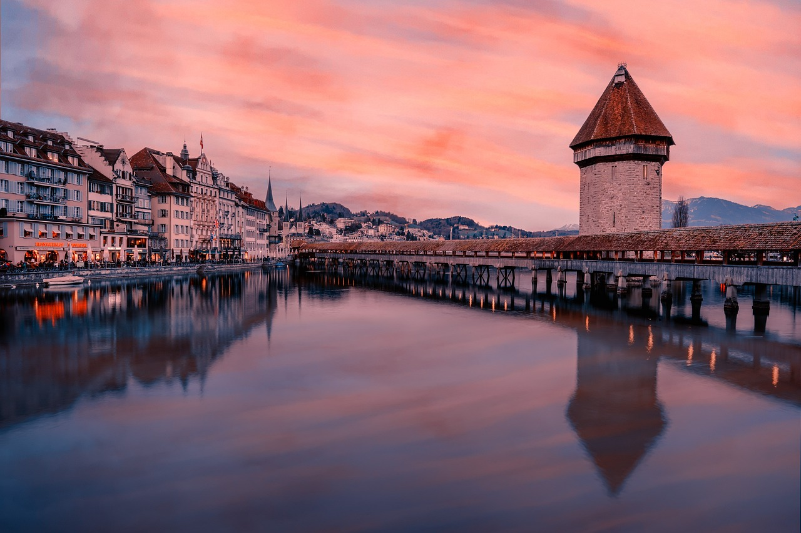

Tourism in Switzerland
Tourism in Switzerland
Switzerland is a traveler's paradise, offering an array of experiences for tourists of all tastes. Known for its picturesque landscapes, the country is a year-round destination, with its snow-covered Alps attracting skiers in the winter and its lush trails drawing hikers in the summer. Beyond the natural beauty, Switzerland's cities are hubs of history and culture, boasting medieval architecture, world-class museums, and vibrant nightlife. From the tranquil beauty of Lake Geneva to the bustling streets of Zurich, Switzerland offers a diverse range of attractions. In this section, we will guide you through Switzerland's top tourist destinations, highlighting the must-visit places and hidden gems that make this country a top choice for travelers worldwide.
Popular Tourist Destinations
Switzerland is a treasure trove of tourist destinations. Cities like Zurich and Geneva offer a blend of history, culture, and modern amenities, with museums, galleries, and vibrant nightlife. The medieval architecture of Bern and Lucerne attracts history enthusiasts, while the luxury resorts of St. Moritz and Zermatt are havens for ski enthusiasts. The UNESCO World Heritage site of Jungfrau-Aletsch and the scenic beauty of Lake Lugano and Interlaken are not to be missed. These destinations, each with their unique charm, make Switzerland a must-visit country for travelers.
Adventure and Activities
Switzerland is a playground for adventure enthusiasts. The Swiss Alps provide opportunities for skiing, snowboarding, and mountaineering. During warmer months, these mountains transform into ideal spots for hiking, mountain biking, and paragliding. The country's lakes and rivers offer water-based activities like sailing, kayaking, and swimming. For those seeking a thrill, bungee jumping at Contra Dam or canyon jumping in Interlaken.